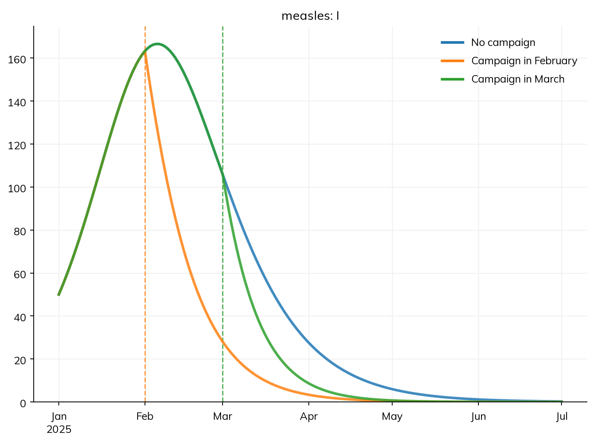
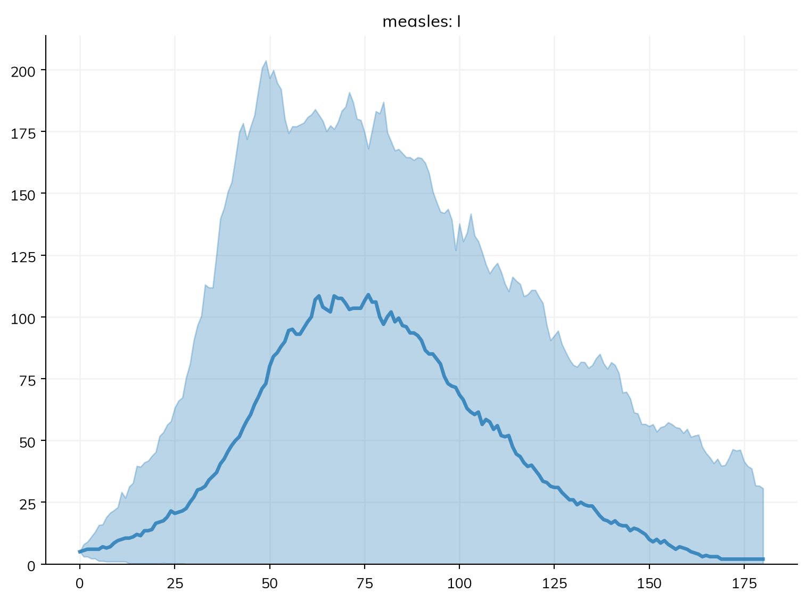
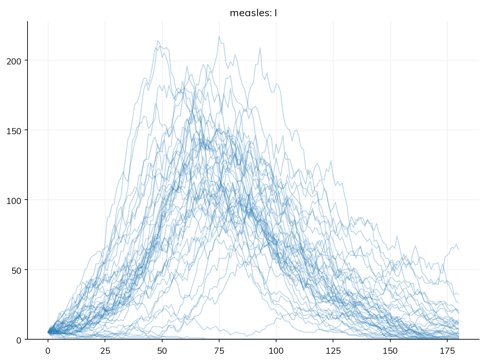
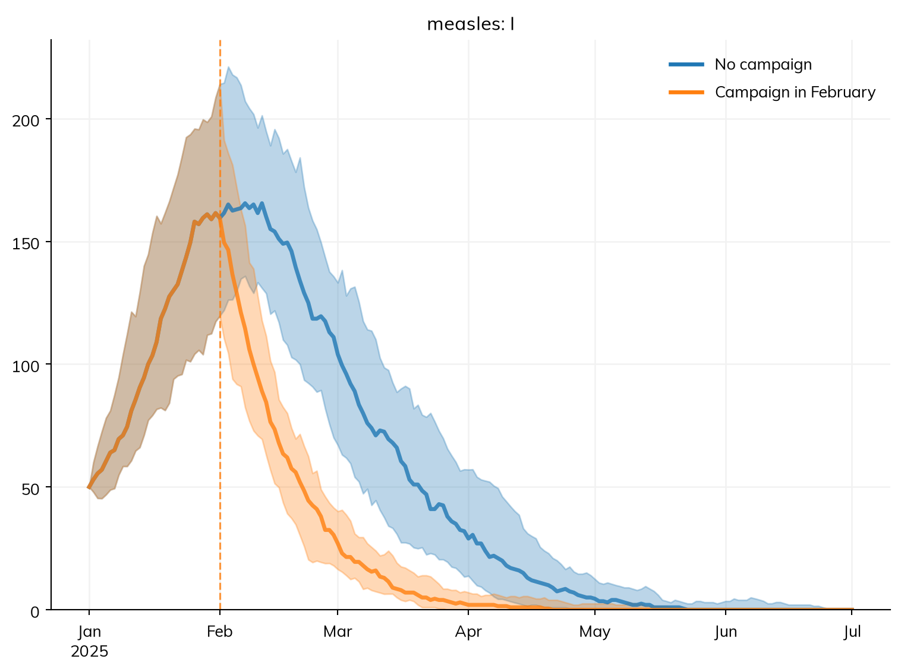
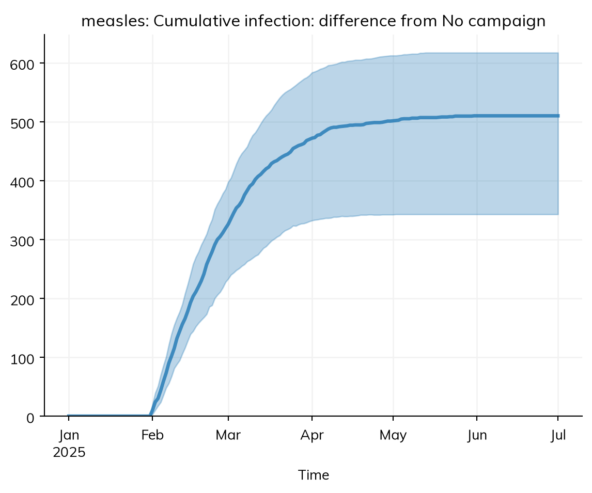
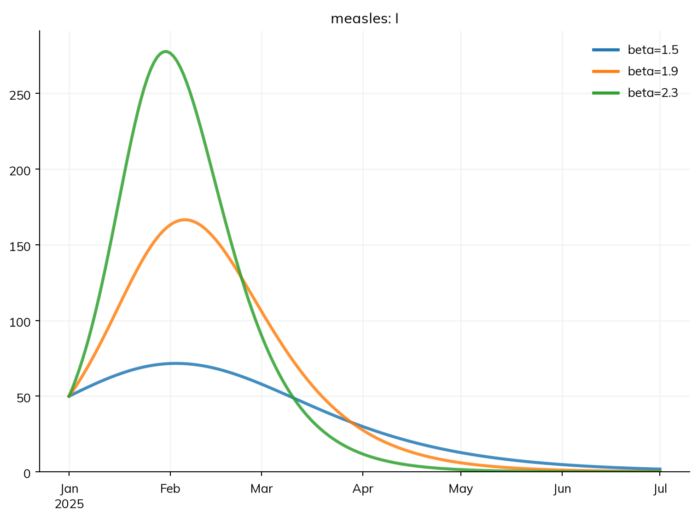
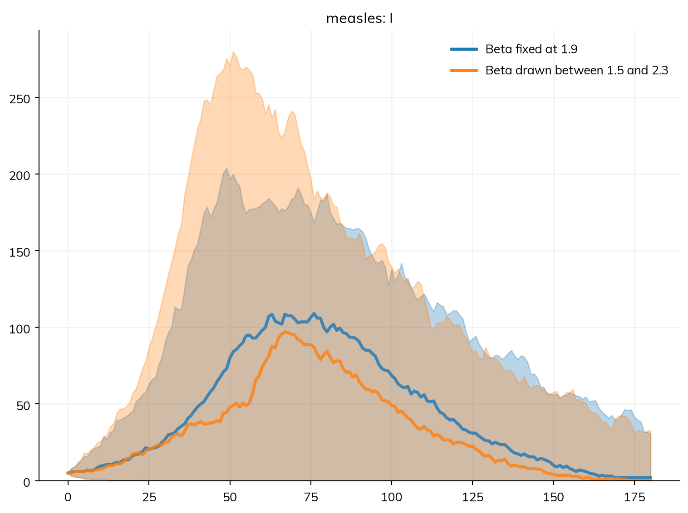

import starsim as ss
S, I, R = ss.states('S I R')
beta = ss.par(1.9) # Transmission rate per day
infection = S >> I @ beta*I
recovery = I >> R @ ss.days(8) # Infectious for 8 days on average
measles = ss.Disease(infection, recovery, init=dict(R=0.9), init_n=dict(I=50)) # 90% immune, 50 infectious
base = ss.Sim(measles, total_pop=20_000, start='2025-01-01', stop='2025-07-01')
february = ss.vaccinate(efficacy=0.95, when='2025-02-01', coverage=0.5)
march = ss.vaccinate(efficacy=0.95, when='2025-03-01', coverage=0.5)Scenarios
Let’s be honest: there isn’t much you can do with a single sim run. A scenario is a sim with something changed (an intervention added, a parameter set to another value, a different population), and 99.9% of the time you’ll want to compare several, each run many times, since one stochastic run is just one draw of what could happen. T5 – Interventions and scenarios teaches the same through one example; Running sims covers single sims.
Scenarios by label
Here, measles has reached a town of 20,000 people in which 90% are immune, with 50 infectious people on 1 January. The question is what a vaccination campaign that reaches half the town, with a vaccine that cuts each recipient’s chance of infection by 95% (a leaky vaccine, the default; leaky=False would instead fully protect 95% of recipients and leave the rest unprotected: see Products), would avert, and whether it matters if it happens in February or March:
library(starsim)
states("S I R")
beta <- par(1.9) # Transmission rate per day
infection <- Transition(S, I, rate = beta * I)
recovery <- Transition(I, R, dur = days(8)) # Infectious for 8 days on average
measles <- Disease(infection = infection, recovery = recovery, init = list(R = 0.9), init_n = list(I = 50)) # 90% immune, 50 infectious
base <- Sim(measles, total_pop = 20000, start = "2025-01-01", stop = "2025-07-01")
february <- vaccinate(efficacy = 0.95, when = "2025-02-01", coverage = 0.5)
march <- vaccinate(efficacy = 0.95, when = "2025-03-01", coverage = 0.5)sim.new() makes a new sim from the same inputs, with whatever is given changed, so each scenario is the base sim with its intervention. ss.parallel() runs a dict of sims by label, at the same time on the computer’s cores:
scenarios = {
'No campaign': base.new(),
'Campaign in February': base.new(interventions=february),
'Campaign in March': base.new(interventions=march),
}
msim = ss.parallel(scenarios)
msim.plot('measles.I')MultiSim: 3 runs of 3 scenarios (No campaign, Campaign in February, Campaign in March)
Done in 0.33 s
scenarios <- list(
"No campaign" = base$new(),
"Campaign in February" = base$new(interventions = february),
"Campaign in March" = base$new(interventions = march)
)
msim <- parallel(scenarios)
msim$plot("measles.I")The result is an ss.MultiSim: the runs of every scenario, with each result holding a row for each run. msim.summarize() gives each result over the whole run for each scenario: the total of each flow (measles_infection is the number of infections) and the final value of each state:
msim.summarize()| value | ||
|---|---|---|
| result | scenario | |
| measles_S | No campaign | 760 |
| Campaign in February | 1,248 | |
| Campaign in March | 896 | |
| measles_I | No campaign | 0.242 |
| Campaign in February | 0.00608 | |
| Campaign in March | 0.00467 | |
| measles_R | No campaign | 19,240 |
| Campaign in February | 18,752 | |
| Campaign in March | 19,104 | |
| measles_infection | No campaign | 1,190 |
| Campaign in February | 702 | |
| Campaign in March | 1,054 | |
| measles_recovery | No campaign | 1,240 |
| Campaign in February | 752 | |
| Campaign in March | 1,104 | |
| measles_infected | No campaign | 0.242 |
| Campaign in February | 0.00608 | |
| Campaign in March | 0.00467 | |
| measles_prevalence | No campaign | 0.00273 |
| Campaign in February | 0.00166 | |
| Campaign in March | 0.00243 | |
| alive | No campaign | 20,000 |
| Campaign in February | 20,000 | |
| Campaign in March | 20,000 | |
| died | No campaign | 0 |
| Campaign in February | 0 | |
| Campaign in March | 0 | |
| emigrated | No campaign | 0 |
| Campaign in February | 0 | |
| Campaign in March | 0 | |
| february_delivered | Campaign in February | 10,000 |
| february_eligible | Campaign in February | 20,000 |
| february_coverage | Campaign in February | 0.5 |
| march_delivered | Campaign in March | 10,000 |
| march_eligible | Campaign in March | 20,000 |
| march_coverage | Campaign in March | 0.5 |
summary(msim) # As msim$summarize(), as a data frameWhere each sim has one disease, a result can also be named without it (msim.plot('I'), msim.results.I), even if the diseases are named differently in each scenario. The sims themselves are kept in msim.sims, by position (msim.sims[0]) or by label (msim.sims['Campaign in March'], the list of that scenario’s runs).
msim.summarize(each=True) puts the runs side by side as columns, one row per result: by default each result over the whole run, as above, or with t= its value on a date (or at a time index):
msim.summarize(each=True, t='2025-03-01')| No campaign | Campaign in February | Campaign in March | |
|---|---|---|---|
| result | |||
| measles_S | 955 | 1,271 | 955 |
| measles_I | 106 | 28 | 106 |
| measles_R | 18,939 | 18,701 | 18,939 |
| measles_infection | 9.39 | 1.56 | 4.83 |
| measles_recovery | 13 | 3.39 | 12.7 |
| measles_infected | 106 | 28 | 106 |
| measles_prevalence | 0.00529 | 0.0014 | 0.00529 |
| alive | 20,000 | 20,000 | 20,000 |
| died | 0 | 0 | 0 |
| emigrated | 0 | 0 | 0 |
| february_delivered | NaN | 0 | NaN |
| february_eligible | NaN | 0 | NaN |
| february_coverage | NaN | 0 | NaN |
| march_delivered | NaN | NaN | 10,000 |
| march_eligible | NaN | NaN | 20,000 |
| march_coverage | NaN | NaN | 0.5 |
Without each=True, t= gives the statistics across the runs of each scenario at that time point instead. ss.parallel() also takes a list of sims (each labeled by its own label), or several sims as arguments; its keywords say how to run them (see the appendix). It runs the sims it is given in place (inplace=False runs copies), which is why the scenarios above are made with base.new().
The sims that ran keep their people, so a run can be looked at person by person afterwards (msim.sims['Campaign in March'][0].people.to_df(), for a run of agents). Of each declared disease, agents keep only the times and histories the model reads (such as ti_I, when a duration needs it); make the sim with keep_times=True to read any other (see People and demographics). For many runs of a large population, shrink=True removes the people from each sim once it has run, keeping the results, to save memory.
Many runs of one model
These runs are ODEs, so each scenario has one answer: what happens on average. To see the outbreaks that could happen, run the model stochastically, many times. Here is measles introduced into the same town by only five infectious people: first the ODE, then 50 runs as an exact stochastic compartmental model (solver='gillespie'; see Solvers and backends for the choices):
measles = ss.Disease(infection, recovery, init=dict(R=0.9), init_n=dict(I=5)) # Now 5 infectious
sim = ss.Sim(measles, total_pop=20_000, stop=ss.days(180))
sim.run();Sim: measles, 20,000 people, as an ODE, days 0 to 180
measles: R0 = 15.2 (R = 1.52 at the start, with 10% susceptible), with 5 infectious at the start
Note: "measles" starts with 5 infected, so whether it takes off is a matter of chance, which solver="ode" does not show; solver="gillespie" with ss.parallel(n_runs=...) does
Done in 0.0047 s; measles: 1,188 infections; at most 137 infectious, on day 74measles <- Disease(infection = infection, recovery = recovery, init = list(R = 0.9), init_n = list(I = 5)) # Now 5 infectious
sim <- Sim(measles, total_pop = 20000, stop = days(180))
sim$run()msim = ss.parallel(sim.new(solver='gillespie'), n_runs=50)
msim.plot('measles.I')MultiSim: 50 runs
Done in 0.033 s
msim <- parallel(sim$new(solver = "gillespie"), n_runs = 50)
msim$plot("measles.I")ss.parallel(sim, n_runs=50) runs it 50 times, each with its own random seed (with no n_runs=, it is one run). The plot shows the median at each time point, and the range that holds 95% of the runs (rather than the mean ± 2 standard deviations, which would happily let deaths go negative); lines=True shows each run instead, which shows what the median hides:
msim.plot('measles.I', lines=True)
Reading many runs
msim.summarize() gives each result over the whole of each run (the total of a flow, such as infections; the final value of a state), and then the median, a 95% interval (low to high), the mean, and the standard deviation over the runs:
msim.summarize()| median | low | high | mean | std | |
|---|---|---|---|---|---|
| result | |||||
| measles_S | 847 | 664 | 1,988 | 954 | 365 |
| measles_I | 2 | 0 | 30.6 | 6.36 | 11.1 |
| measles_R | 19,152 | 18,012 | 19,331 | 19,039 | 366 |
| measles_infection | 1,148 | 6.7 | 1,331 | 1,041 | 365 |
| measles_recovery | 1,152 | 11.7 | 1,334 | 1,040 | 366 |
| measles_infected | 2 | 0 | 30.6 | 6.36 | 11.1 |
| measles_prevalence | 0.00246 | 1.99e-05 | 0.00305 | 0.00229 | 0.000829 |
| alive | 20,000 | 20,000 | 20,000 | 20,000 | 0 |
| died | 0 | 0 | 0 | 0 | 0 |
| emigrated | 0 | 0 | 0 | 0 | 0 |
interval=0.5 gives the interquartile range instead. The band in the plot is different: it is the spread at each time point, taken separately. The median curve is not a typical epidemic, since the runs peak at different times, and its peak is lower than the peak of most runs:
peaks = msim.summarize(how={'measles_I': 'max'}).loc['measles_I'] # The peak of each run, summarized
print('Median of the peaks:', peaks['median'])
print('Peak of the median curve:', msim.results.measles.I.median().max())Median of the peaks: 137.5
Peak of the median curve: 109.0So for the size or timing of the peak, summarize the peak of each run, not the median curve; for how many people are infected on a given date, use the band. The usual summaries of a result over the runs are built in:
res = msim.results.measles.I
res.values # Every run: one row per run, one column per time point
res.median() # The median at each time point
low, mid, high = res.quantiles() # The 2.5%, 50%, and 97.5% quantiles at each time point
res.quantiles([0.25, 0.5, 0.75]) # Other quantiles
res.mean() # The mean at each time point
res.take(3) # One run, as the result of a single simEach summary is over the runs of each scenario separately (select(scenario='Campaign in February') picks one). msim.to_df() gives every result as quantiles over the runs at each time, as one long table.
As a rough guide to how many runs, 20 to 50 are enough for a median and the shape of the spread, and a few hundred for the ends of a 95% interval, which rest on the most extreme one run in 40.
Seeds
Every stochastic run starts from a random seed (rand_seed, 1 by default), and the same seed gives the same run, on any computer. n_runs=k uses the seeds rand_seed, rand_seed + 1, …, rand_seed + k − 1, so the first of many runs is the same as a single run, and msim.runs, the table of runs, gives the seed of each, so a run that stands out can be made again on its own. To run particular seeds, give them as a sweep (below): ss.parallel(sim, pars=dict(rand_seed=[1, 5, 9])) gives three runs of the sim’s scenario (not three scenarios). An ODE has no random numbers, so its seed changes nothing. To compare two runs, see Profiling and debugging.
Comparing scenarios with many runs
Comparing two scenarios run many times, the question is whether the difference between them is larger than chance alone would make. The runs of each scenario use the same seeds in the same order, so the first run of the baseline and the first run of the campaign share their random numbers: the same chains of transmission, until the campaign changes them (common random numbers; see Random numbers). The difference between paired runs is then mostly the effect of the intervention, not noise. msim.diff() gives the difference of each scenario from a baseline, run by run, and msim.summarize(baseline=...) summarizes those differences. Here are the February campaign and the baseline, each run 20 times with the chain binomial (the “Explicit” tab makes the 20 runs of each with the seeds that n_runs=20 gives them):
scenarios = {
'No campaign': base.new(solver='binomial', verbose=0),
'Campaign in February': base.new(solver='binomial', interventions=february, verbose=0),
}
msim = ss.parallel(scenarios, n_runs=20)
msim.plot('measles.I')
scenarios <- list(
"No campaign" = base$new(solver = "binomial", verbose = 0),
"Campaign in February" = base$new(solver = "binomial", interventions = february, verbose = 0)
)
msim <- parallel(scenarios, n_runs = 20)
msim$plot("measles.I")scenarios = {
'No campaign': base.new(solver='binomial', verbose=0),
'Campaign in February': base.new(solver='binomial', interventions=february, verbose=0),
}
runs = [sim.new(rand_seed=seed, label=label) for label, sim in scenarios.items() for seed in range(1, 21)] # Each scenario with seeds 1 to 20, as n_runs=20 gives
msim_explicit = ss.parallel(runs) # Runs with the same label are runs of one scenario
msim_explicit.plot('measles.I')
msim.summarize(baseline='No campaign').loc['measles_infection']| median | low | high | mean | std | |
|---|---|---|---|---|---|
| scenario | |||||
| Campaign in February | -510 | -617 | -343 | -500 | 82.3 |
The difference in infections is negative: the infections the campaign averts. msim.diff() gives the differences themselves, run by run, as results; here, the infections averted so far at each point in time:
averted = -msim.diff('No campaign')['Campaign in February'].measles.infection.cum # Infections averted so far, in each pair of runs
averted.plot()
Paired runs give a narrower interval for the effect than runs with different seeds would. They need the same model apart from the intervention: a change to anything else (the population size, the time step) breaks the pairing.
Parameter sweeps and uncertainty
Parameter sweeps
To see how a result depends on a parameter, run the sim with each of a set of values. pars= takes a list of values for each parameter, and each value is a scenario of its own, labeled with it. Here the outbreak with β from 1.5 to 2.3 per day (R0 from 12 to 18):
sim = base.new(verbose=0) # Back to the base sim, with 50 infectious at the start
msim = ss.parallel(sim, pars=dict(beta=[1.5, 1.9, 2.3]))
msim.plot('measles.I')
sim <- base$new(verbose = 0) # Back to the base sim, with 50 infectious at the start
msim <- parallel(sim, pars = list(beta = c(1.5, 1.9, 2.3)))
msim$plot("measles.I")msim.summarize().loc['measles_infection']| value | |
|---|---|
| scenario | |
| beta=1.5 | 721 |
| beta=1.9 | 1,190 |
| beta=2.3 | 1,467 |
The parameter is named as it is in the model: here beta, the name of the ss.par() it was given (describe() lists the names); with more than one disease, give the disease too (pars={'measles.beta': [1.5, 2.3]}). The values become columns of msim.runs, the table of runs, and a result can be picked by value: msim.results.measles.I.select(beta=2.3). Several parameters given together are taken value by value, so each needs the same number of values; for other sets, such as a full grid, give a list of dicts ([dict(beta=b, dur=d) for b in betas for d in durs]). n_runs= runs each set that many times, with the same seeds for each set. A seed given in pars= is a run of its scenario, not a scenario of its own.
Uncertainty in parameter values
A sweep gives each value equal space, but that does not say they are equally likely. A parameter declared with ss.par() and bounds (or a prior) can be drawn afresh for each run with priors=True: each run takes a value drawn uniformly between the bounds (or from the prior), on a Latin hypercube so that few runs cover the range evenly, and a seed of its own, so the spread of the runs includes both. Here β is between 1.5 and 2.3 per day (R0 between 12 and 18), with the five initial cases from before, compared with the same runs with β fixed:
beta = ss.par(1.9, bounds=[1.5, 2.3]) # β, known to lie between these values
infection = S >> I @ beta*I
recovery = I >> R @ ss.days(8)
measles = ss.Disease(infection, recovery, init=dict(R=0.9), init_n=dict(I=5))
sim = ss.Sim(measles, total_pop=20_000, stop=ss.days(180), solver='gillespie', verbose=0)
fixed = ss.parallel(sim.new(label='Beta fixed at 1.9'), n_runs=50)
drawn = ss.parallel(sim.new(label='Beta drawn between 1.5 and 2.3'), priors=True, n_runs=50)
drawn.runs.head() # The value of beta in each run| scenario | beta | rand_seed | |
|---|---|---|---|
| 0 | Beta drawn between 1.5 and 2.3 | 1.571811 | 1 |
| 1 | Beta drawn between 1.5 and 2.3 | 2.124793 | 2 |
| 2 | Beta drawn between 1.5 and 2.3 | 2.249693 | 3 |
| 3 | Beta drawn between 1.5 and 2.3 | 2.172822 | 4 |
| 4 | Beta drawn between 1.5 and 2.3 | 1.895011 | 5 |
ss.MultiSim.merge() puts the two sets of runs together, so they can be plotted and summarized side by side:
both = ss.MultiSim.merge(fixed, drawn)
both.plot('measles.I')
both.summarize().loc['measles_infection']| median | low | high | mean | std | |
|---|---|---|---|---|---|
| scenario | |||||
| Beta fixed at 1.9 | 1,148 | 6.7 | 1,331 | 1,041 | 365 |
| Beta drawn between 1.5 and 2.3 | 1,048 | 4 | 1,530 | 963 | 494 |
With β uncertain, the band holds both the chance in each run and the uncertainty in β. After a model is fitted to data, the values found by the fit can be carried into a projection the same way (fit.project(); see Fitting a model).
Pitfalls
- Scenarios that differ in more than the intervention. Make each scenario from the same base with
sim.new(), so that everything else, including the seed, is the same. - Comparing medians instead of differences. The difference between the medians of two scenarios is not the median difference; use
msim.diff()for the effect of an intervention, run by run. - Runs that die out pull the summary down. If the question is about outbreaks that take off, look at those runs, and report the chance of dying out separately.
- Running in parallel from a script. On Windows and macOS, put the code that runs the sims under
if __name__ == '__main__':(see Speed and scale); where processes can’t be started, useworkers=1. - Reading a band as a confidence interval for a parameter. The band over runs with fixed values is the spread due to chance alone; it says nothing about how well β is known unless the runs drew β too (
priors=True).
Further reading
- Covasim: Running scenarios: multisims, scenarios, and uncertainty in Starsim’s predecessor
- EpiModel: Training materials: stochastic network models and their simulation-based uncertainty in R
- Epiverse epidemics: Modelling scenarios: comparing intervention scenarios, with parameter uncertainty, in an R package
- Epiverse epidemics: Parameter uncertainty: drawing parameter values for each run, as
priors=Truedoes here
Appendix: MultiSims and ss.parallel()
What a MultiSim has
The methods of an ss.MultiSim that a modeler uses, each with the first line of its docstring (see ss.MultiSim for the rest). combine() adds the runs together into one sim, as if they were one population (counts summed, other results averaged by population), and ss.MultiSim.merge() and split() put the runs of several MultiSims together and apart again:
import inspect
import pandas as pd
pd.set_option('display.max_colwidth', None) # Show each entry in full
names = ['plot', 'plot_each', 'summarize', 'diff', 'to_df', 'combine', 'merge', 'split', 'shrink', 'copy', 'branching', 'run_pars']
docs = {name: inspect.getdoc(getattr(ss.MultiSim, name)).split('\n')[0] for name in names}
pd.DataFrame.from_dict(docs, orient='index', columns=['What it gives'])| What it gives | |
|---|---|
| plot | Plot the results across the runs: the median and a 95% interval of each scenario, or every run if `lines=True` |
| plot_each | Plot each run on its own time axis, for sims with different time points (see `plot()`): each scenario in a color of its own |
| summarize | A table of each result over the whole of each run, across the runs: the median, an interval, the mean, and the standard deviation |
| diff | The difference of each scenario from a baseline, for every result they share, run by run |
| to_df | Every result across the runs; see `ss.run.MultiResults.to_df()` for the arguments |
| combine | Combine the sims into a single sim, whose results are those of one population made of all of them, e.g. to treat several smaller sims as one larger population |
| merge | Merge several MultiSims into one, with the runs of each, one after the other; `msim.split()` separates them again. |
| split | Split one MultiSim into several, each with some of its runs; the reverse of `ss.MultiSim.merge()`. |
| shrink | Shrink each sim, to save memory (e.g. before saving the MultiSim), keeping the results across runs; see `sim.shrink()` |
| copy | A deep copy of the MultiSim, its sims included |
| branching | For the runs of a branching process (`ss.Sim(branching=True)`): what came of them together, as an `ss.run.Branching`; None if the runs are not branching processes (see `sim.branching` for one run) |
| run_pars | The values of the parameters swept (or drawn) in each run, as a dataframe (or None if there are none) |
Its attributes are msim.results (every result with a run axis first), msim.runs (one row per run: its scenario, the values swept or drawn, and its seed), and msim.sims (the sims that were run, by position or by scenario). For many thousands of runs, keep only what you need from each (msim.summarize(), msim.to_df()) rather than the MultiSim itself; ss.converters.to_hub() writes runs as the quantile tables that forecasting hubs take. A result across runs has these methods of its own:
names = ['median', 'mean', 'quantiles', 'take', 'select', 'cum', 'plot']
docs = {name: inspect.getdoc(getattr(ss.Result, name)).split('\n')[0] for name in names}
pd.DataFrame.from_dict(docs, orient='index', columns=['What it gives'])| What it gives | |
|---|---|
| median | For a result across runs, the median over the runs of each scenario (as a result of one run, if there is one scenario); otherwise the median of the values |
| mean | For a result across runs, the mean over the runs of each scenario (as a result of one run, if there is one scenario); otherwise the mean of the values |
| quantiles | Quantiles over the runs of each scenario, for a result across the runs of a MultiSim |
| take | Some of the runs of a result across runs: a result of one run for a position, or across runs for a list of them |
| select | Select groups of a stratified result by name: keeps the given levels of each dimension, and sums over the rest |
| cum | The cumulative total of a flow over time, e.g. `sim.results.sir.infection.cum` (a stock; computed when asked for) |
| plot | Plot the result, with one line per column for a 2D result |
The keywords of ss.parallel()
ss.parallel() and ss.MultiSim() take the same keywords (ss.parallel() is ss.MultiSim(...).run()), and msim.run() takes them again to change them:
| Keyword | Default | What it does |
|---|---|---|
| the sims | One sim, a list of sims, several sims as arguments, or a dict of them by label (ss.parallel({'baseline': s1, 'vaccine': s2})) |
|
n_runs |
1 | Run each sim this many times, with the seeds rand_seed, rand_seed + 1, … |
pars |
none | Sets of values of the model’s parameters, each a scenario of its own: a dict of lists, taken value by value, or a list of dicts |
priors |
False | Draw n_runs sets of values from the parameters’ priors (or bounds), on a Latin hypercube; or the draws themselves, e.g. from a posterior |
workers |
one per CPU | The number of processes; 1 runs the sims one after the other in this process |
shrink |
False | Remove the people from each sim once it has run, keeping the results |
inplace |
True | Update the sims given (with no n_runs or pars) with their results; False runs copies |
verbose |
the sims’ own | How much each run prints; by default the MultiSim shows the progress of the runs |
until |
none | As for sim.run(), for each run: a time, or a condition that stops it |
run_args |
none | Passed to each sim.run() |
par_args |
none | Passed to sc.Parallel(), which runs the processes |
label |
none | A name for the MultiSim |